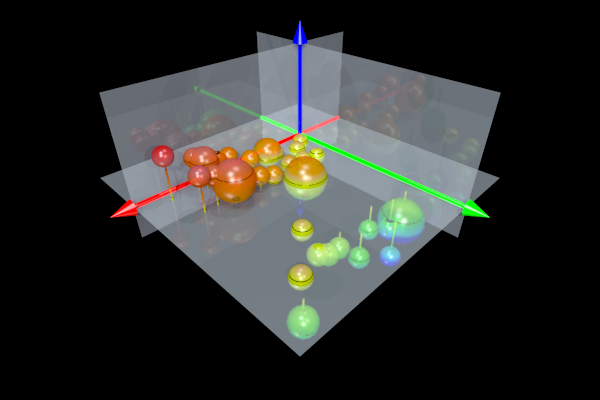

TABLE OF CONTENTS
- 1. ScPovPlot3D/Balloons.inc
- 1.1. Balloons.inc/ScatterBalloonData()
- 1.2. Balloons.inc/SphereOnColumn()
- 1.3. Balloons.inc/ScalingFunction()
- 1.4. Balloons.inc/SetColor()
- 1.5. Balloons.inc/SetDZero()
- 1.6. Balloons.inc/SetInterior()
- 1.7. Balloons.inc/SetTexture()
- 1.8. Balloons.inc/SetVScale()
- 1.9. Balloons.inc/DeclareLevel
- 1.10. Balloons.inc/DZero
- 1.11. Balloons.inc/VScale
ScPovPlot3D/Balloons.inc [ Modules ]
PURPOSE
Macros for representation 3D scattered data as spheres proportional to value in specific space point

Fig.[Balloons] Representation of 3D scalar field V=V(x,y,z) by balloon's method
********************************************************* ** Tested on PovRay 3.7 ** ** License: GNU GPL ** ** Homepage: http://scpovplot3d.sourceforge.net ** ********************************************************* ** version: 3.1.1.1 (& have a nice time ;) ** *********************************************************AUTHOR
Janusz Opi쓰 Ph.D.
jmo@agh.edu.pl, janusz.opila@gmail.com Dept. of Applied Informatics AGH University of Science & Technology, Cracow, Poland Maintained by Janusz Opi쓰 Ph.D.COPYRIGHT
GNU GPL v.3 License (c) 2012-now by Janusz Opi쓰 Ph.D. AGH University of Science and Technology
Balloons.inc/ScatterBalloonData() [ Main macros ]
[ Top ] [ Balloons.inc ] [ Main macros ]
PURPOSE
this macro creates chart for data in the form of z=f(x1, x2, x3) where z is marked as the radius of the sphere, uses SphereOnColumn() macro
SYNOPSIS
ScatterBalloonData(string filename InFileName, float er0, pfunction sigma, float columnRad)INPUTS
InFileName - Data file name - for format see example 'Baloons.dat' er0 - minimum radius of spheres, base radius sigma - pointer to inline Function taking one float returning float, its goal is to scale radii to reasonable range columnRad - radius of columnSEE ALSO
SphereOnColumn(), ScalingFunction()
EXAMPLE
ScatterBalloonData("Balloons.dat", .710, ScalingFunction, 0.05)
Balloons.inc/SphereOnColumn() [ Main macros ]
[ Top ] [ Balloons.inc ] [ Main macros ]
PURPOSE
Draws sphere on top o column (or bottom if below zero XY plane )
SYNOPSIS
SphereOnColumn(3Dvector Center, float Rs, float Rc)INPUTS
Center - center of the sphere in POVRay coordinates Rs - radius of the sphere Rc - radius of the cylinderSEE ALSO
Nothing yet
Balloons.inc/ScalingFunction() [ Helper macros ]
[ Top ] [ Balloons.inc ] [ Helper macros ]
PURPOSE
Inline Function scaling radius of sphere from real value V(x,y,z) to fit it in a reasonable range
INPUTS
this Function takes one float argumentSEE ALSO
ScatterBalloonData(), "Function()" definition in POVRay manual, Function pointers
EXAMPLE
#declare ScalingFunction = Function (rr) { 5*ln(abs(rr))+0.1 } // default Function - one may declare his own
Balloons.inc/SetColor() [ Helper macros ]
[ Top ] [ Balloons.inc ] [ Helper macros ]
PURPOSE
Sets default color for different items:
- SetColor( color vector FullColour )
- SetRGBColor( float R, float G, float B) - for RGB definition style
- SetRGBFTColor( float R, float G, float B, float F, float T) for RGBFT definition
- SetRGBFTColor_1( float R, float G, float B, float F, float T) and
- SetRGBFTColor_2( float R, float G, float B, float F, float T) two-color RGBFT items
Balloons.inc/SetDZero() [ Helper macros ]
[ Top ] [ Balloons.inc ] [ Helper macros ]
PURPOSE
Sets value of DZerovariable
Balloons.inc/SetInterior() [ Helper macros ]
[ Top ] [ Balloons.inc ] [ Helper macros ]
PURPOSE
declares texure for the item
SYNOPSIS
SetInterior(interiordef)
Balloons.inc/SetTexture() [ Helper macros ]
[ Top ] [ Balloons.inc ] [ Helper macros ]
PURPOSE
declares texure for the item
SYNOPSIS
SetTexture(texturedef)
Balloons.inc/SetVScale() [ Helper macros ]
[ Top ] [ Balloons.inc ] [ Helper macros ]
PURPOSE
Sets value of VScale variable
Balloons.inc/DeclareLevel [ Variables ]
[ Top ] [ Balloons.inc ] [ Variables ]
PURPOSE
DeclareLevel determines what is defined:
- 0 = colour only
- 2 = also texture
- 4 = complete material
this value is valid until next "Set...()" declaration is met
SOURCE
#declare DeclareLevel = 0;
Balloons.inc/DZero [ Variables ]
[ Top ] [ Balloons.inc ] [ Variables ]
PURPOSE
minimal minimal float number assumed not beiing equal zero application of this value depends on algorithm employed
SOURCE
#declare DZero = 1E-4;
Balloons.inc/VScale [ Variables ]
[ Top ] [ Balloons.inc ] [ Variables ]
PURPOSE
minimal distance between grid & random point, this value is valid until "SetDZero()"
SOURCE
#declare VScale = 1.0; // Enhancement along vertical axis (negative values allowed ;)